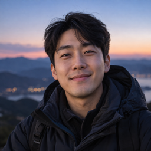
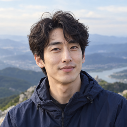
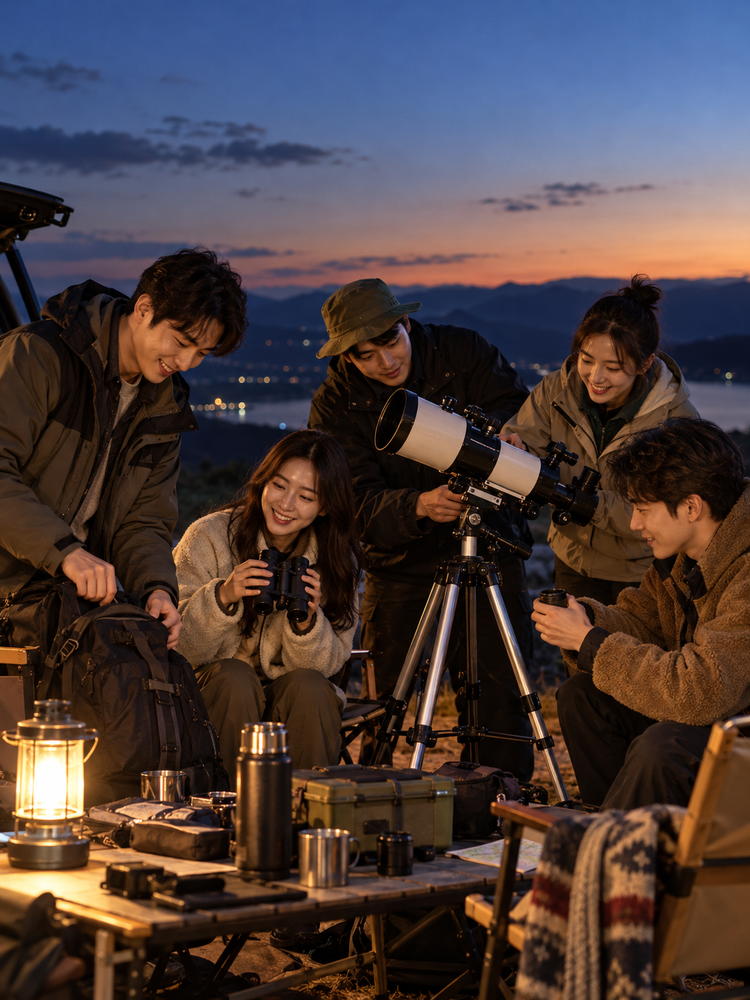
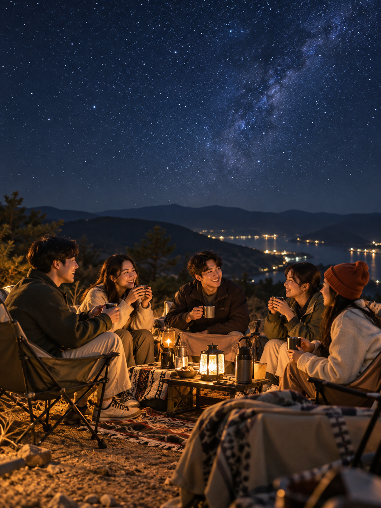

카운팅스타
같은 감성을 가진 사람들과 함께 별을 보며 나누는 대화가 너무 좋았어요.

같은 감성을 가진 사람들과 함께 별을 보며 나누는 대화가 너무 좋았어요.

혼자서만 별을 보러 다니다 처음으로 누군가와 함께하는 여행에 참여했는데 힐링이 되더라구요.

좋은 사람들과 좋은 시간을 보내었어요. 그리고 혼자서 잠깐 사색에 빠지는 시간들도 존중해줘서 좋았어요.
도시의 불빛에서 벗어나 밤하늘을 바라보는 여행
밤하늘과 별을 함께 감상하는 것을 주제로 한 콘셉트 여행입니다.
경기도 양주 송암스페이스센터에서 별과 우주를 함께 만나는 당일 여행이에요. 서울에서 차량으로 함께 출발해 플라네타륨과 천문대 관측 프로그램을 체험하고, 스타스키친에서 저녁을 함께 먹어요. 저녁 식사는 참가비에 포함돼요. 시설 예약과 프로그램 순서는 확정 후 안내해요.
같은 하늘을 보고, 서로의 이야기를 나눠요. 별이 궁금하지만 혼자 천문대를 방문하기는 망설였던 사람들이 함께하는 여행이에요. 여행 템포와 교류 성향, 자유시간 선호도를 살펴 팀을 구성해요. 시설 프로그램은 현장 진행자의 안내에 따라 참여하고, Toravel 호스트는 이동과 일정, 참가자 안내를 맡아요. 저녁에는 스타스키친에서 한 식탁에 둘러앉아 이야기를 나누고, 체험 전후에는 조용히 쉬는 시간도 가져요.
※ 시설 예약 회차와 교통 상황에 따라 시간과 순서가 달라질 수 있어요.



여행 전 확인할 정보를 안내해요.
다른 여행도 확인해 보세요.